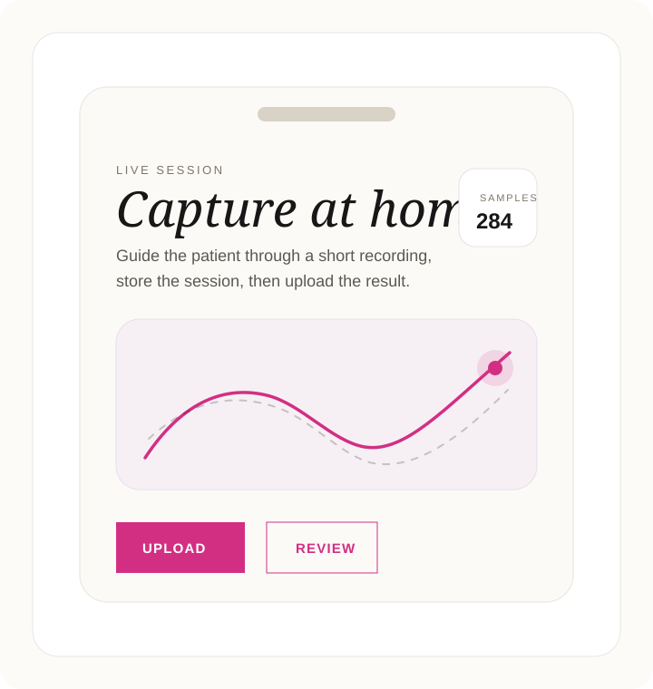

Take-home vestibular workflow
Home Nystagmus Monitor
Record at home. Upload securely. Review clinically. A focused Android app for guided nystagmus capture and server-side analysis.
Explore server setup ↓
Server setup
Need backend setup?
Server deployment is less frequently needed during daily use. We moved the full Quick Start into a dedicated page so this landing stays focused and relaxed.
Open Server Quick Start →